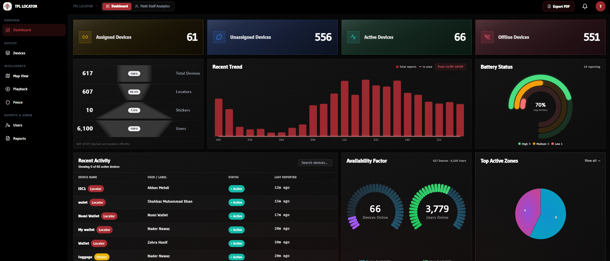

Context
TPL Locator is a BLE-based tracking product built for personal and asset visibility in environments where conventional SIM and GPS systems are limited, expensive to run continuously, or simply unavailable. Slim enough to sit inside a wallet, it's designed around everyday carry — wallets, bags, personal essentials — rather than the vehicle-tracking use case TPL Trakker is best known for.
That design choice runs against the default assumption in most tracking products — that a SIM card or a GPS chip is the starting point — and instead treats connectivity-free, low-power operation as the requirement the rest of the system has to be built around: crowd-sourced positioning and device-level telemetry standing in for a cellular or satellite link, with wireless charging and up to three years of battery life making that trade-off practical for daily use.
02Years of battery, without SIM or GPS
The key challenge was delivering a practical, pocket-sized tracking product that could run for years on battery life while remaining accurate enough for everyday personal and asset tracking — without the recurring SIM cost or the power draw of a GPS radio that would make a "years of battery life" claim impossible.
The architecture needed to avoid dependence on SIM or GPS, support low-power BLE operation and wireless charging, and still provide meaningful location visibility in real deployment conditions through a mobile app and a web dashboard — three hardware constraints and two software surfaces that tend to pull against each other in most tracking products.
03From device to full telematics platform
The project spans device firmware, a mobile app, and a full operational dashboard, tied together by fleet and account logic, event monitoring, and crowd-sourced position resolution. Over time the focus expanded beyond just hardware tracking into the full telematics experience: user management, geofencing, historical replay, asset monitoring, and real-time operational controls that TPL Trakker's other fleet products already relied on.
That expansion reflects how the platform grew from a single tracking problem into an operational tool — the device layer solves location, but the app and dashboard layers are what turn that location data into something a person or a fleet team can actually act on day to day. "SMART TRAKKING, SIMPLY CONNECTED" is the product's own framing of that link: the tracker works seamlessly with the mobile app to surface real-time updates, alerts, and control, without the user ever having to think about how the position was resolved underneath.

04Device, app, and dashboard
Hardware
A BLE-enabled tracking card measuring 8.6 × 5.4 × 0.25cm, engineered for low-power operation, up to three years of battery life, and wireless charging — deliberately built to disappear into a wallet rather than announce itself as a tracker.
Mobile app
The Android and iOS companion app is the primary consumer interface: real-time location, alerts, and device status, built on top of the same crowd-sourced BLE positioning the web dashboard consumes.
Web dashboard
Telematics data processing, user and asset management, event logic, geofencing, and operational dashboard workflows built on a React and Material-UI frontend (Redux Toolkit for state, Recharts for the operational charts, Axios against the backend API) — the same platform pattern used across TPL Trakker's other telematics products.
Positioning backend
Crowd-sourced BLE positioning and device telemetry replace SIM- and GPS-based location resolution, feeding both the mobile app and the dashboard from the same backend services rather than two independent tracking pipelines.
Results and lessons
The product demonstrates how telematics can be built around practical constraints rather than standard assumptions. Instead of depending on SIM or GPS, the platform uses a more resilient and cost-aware model to support personal and asset tracking — and it's shipping: TPL Locator is a live TPL Trakker product with its own storefront, marketing site, mobile app, and dashboard in active use, not a lab prototype.
The work also includes the broader system layer required for a real operational platform: dashboards, replay, geofencing, alerts, and access control — the parts of a tracking product that don't show up in a spec sheet but determine whether people and fleet teams actually use it. Building the device, the app, and the dashboard as one connected platform, rather than three separate deliverables, is what let "no SIM, no GPS" become a shippable product claim instead of a hardware footnote.